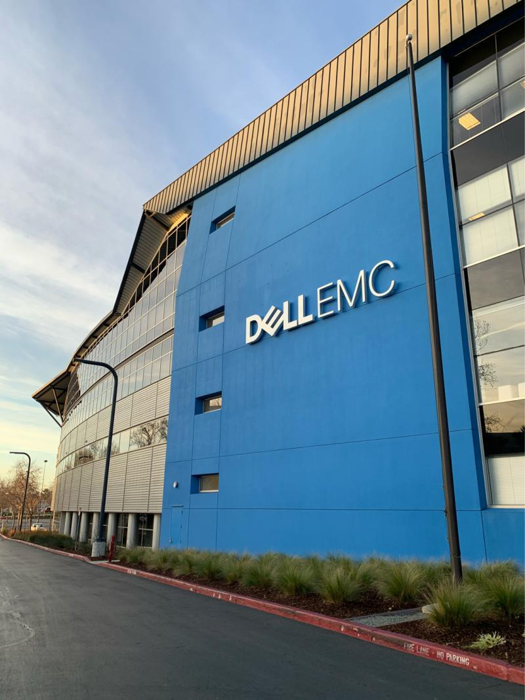

Dell Technologies, Software Engineering Intern
Santa Clara, CA | May - August 2024
- Developed a Field Analysis Tool: Created a tool that streamlined the data collection and reporting processes for over 10,000 PowerStore storage systems, improving accuracy and supporting AIOps training.
- Data Management and Analysis: Engineered a solution to extract and parse metrics from diverse file types (.txt, .csv, .json) and built a centralized database using Golang and SQL. This involved updating data every 5 minutes from xcounter collections.
- Automated Reporting: Generated and automated weekly reports with over 10 visualizations on key metrics like data reduction ratios, drive wear, and platform specifications. Reports were distributed to a 50+ member team via Confluence, utilizing bash/shell automation.
- Interactive GUI Development: Designed and implemented an interactive GUI that allows users to filter and analyze data in real-time. This innovation facilitated quick identification of outliers and expanded the scope of metrics analyzed.
- AI and Dynamic Analysis: Proposed enhancements for real-time data visualization and AI-driven analysis to improve drive wear pattern identification and overall data insights.
